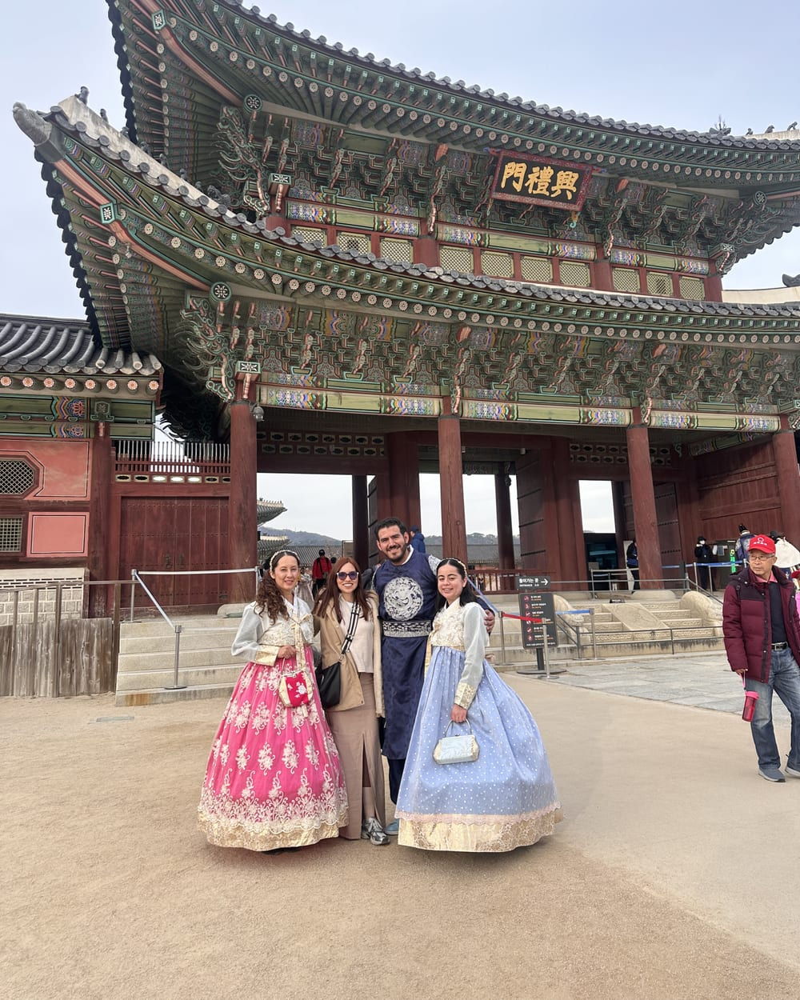
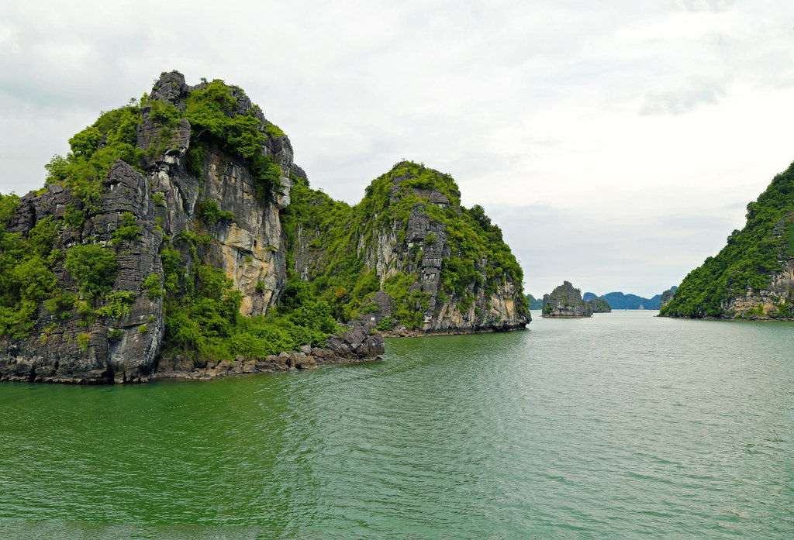
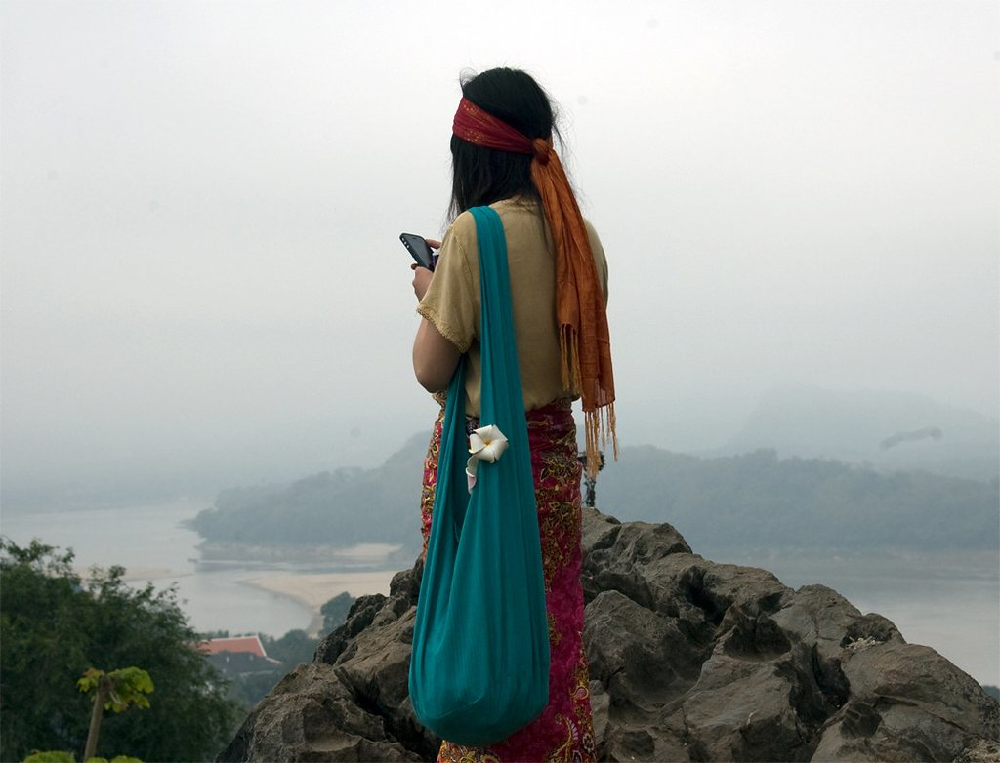
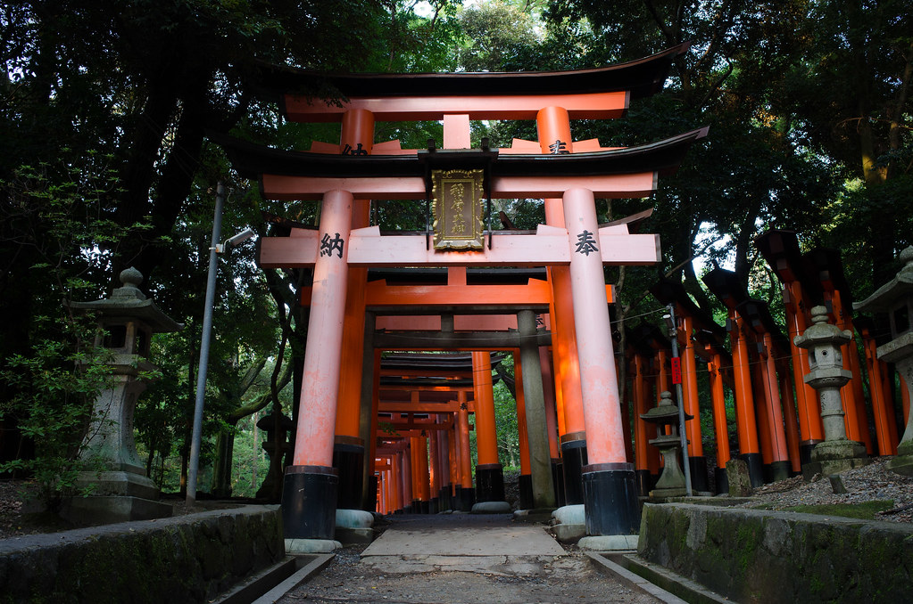
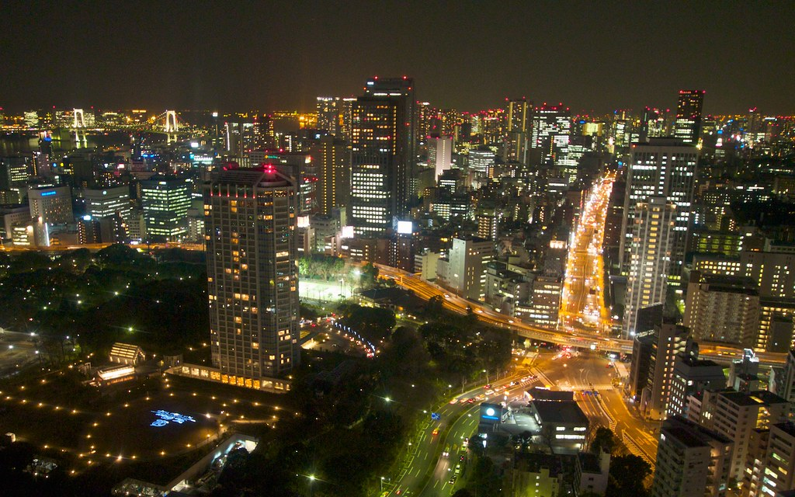

Blog de viajes
Todo lo que aprendí viviendo aquí, para que tú viajes mejor, gastes mejor y disfrutes más.

El clima cambia mucho de norte a sur. Te explico cuándo ir según la región y dónde encontrar mejores precios.

Cómo organizar tus días en los templos, qué pase comprar y el mejor punto para el amanecer.

Del lujo al boutique con encanto: en qué barrio alojarte y qué hoteles valen la pena.

De 2 a 4 semanas: cómo combinar Vietnam, Camboya, Tailandia y Laos sin agobios.

Norte, Centro y Sur: cómo cambian los sabores y los platos imperdibles de cada región (con tips de street food).

La barrera del idioma frena a miles de viajeros. Por qué pasa y cómo Asia Lo Posible cambia las reglas del juego.
Guía boutique
Los 10 lugares que recomendamos vivir al menos una vez. Toca cada uno para leer su guía con las mejores recomendaciones y datos clave.

01
04
06
08 09
09Te llevamos. Salidas grupales en español o tu viaje a medida.
Ver nuestros viajes